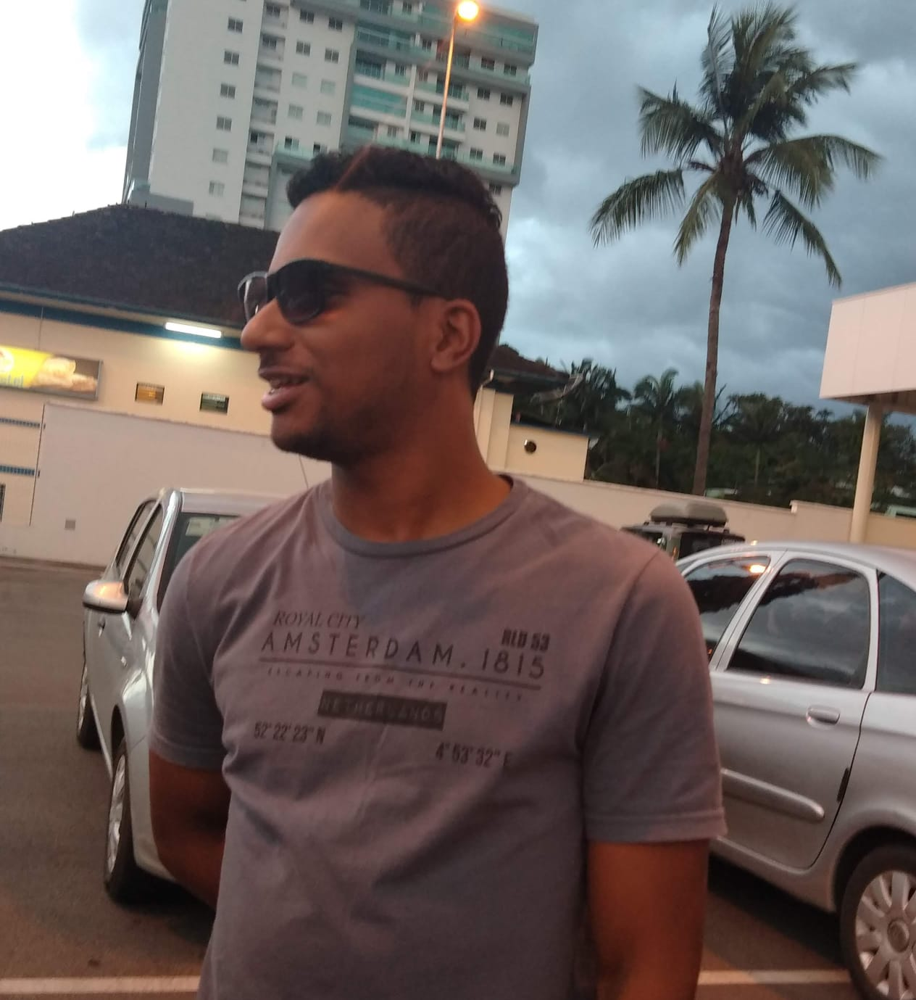

Já passei pelas seguintes empresas ligadas a tecnologia: PCPRIME Soluções em informática e Brusoft, todas atuei como técnico.
Sempre tive interesse em trabalhar com Software, tenho uma afinidade com computadores mas tive a oportunidade de trabalhar com hardware e agarrei. Sempre desempenhei meu papel com maestria, me tornando assim um ótimo profissional.
Como comentei, sempre desejei trabalhar com o Software porém faltava a coragem para dar o primeiro passo como me desenvolvi muito bem na área do Hardware, tinha esse receio de dar a iniciativa até que veio o Covid e o mundo virou de perna pro ar.
Durante a pandemia, comecei a pesquisar sobre o assunto e me inteirar até que decidi dar o primeiro passo. Iniciei um curso Técnico em desenvolvimento de sistemas no Senai, e vou falar pra vocês foi a melhor coisa que já fiz na vida, me sinto completo. Algo que eu não sentia no Hardware a diferença é que no Software, na minha visão, precisa estar em constante mudança e aprendizado.
Hoje você faz um projeto usando uma tecnologia e amanhã pode estar fazendo outro totalmente diferente e isso me desafia a aprender mais e querer fazer mais. Vou falar uma frase que falo quando alguém me pergunta o que estou achando da área: “quanto mais você acha que sabe mais você tem a certeza que não sabe tudo”. É como diz Sócrates “só sei que nada sei”, enfim estou amando essa área.
Voltando ao assunto tenho 25 anos, moro hoje com minha mãe, irmão e minha mulher. Acabamos de comprar uma casa e o plano é em 2023 nos mudar.